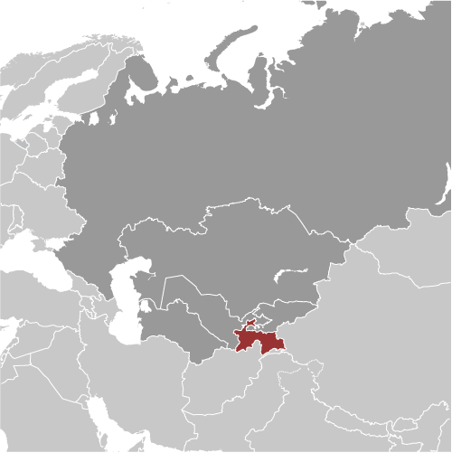
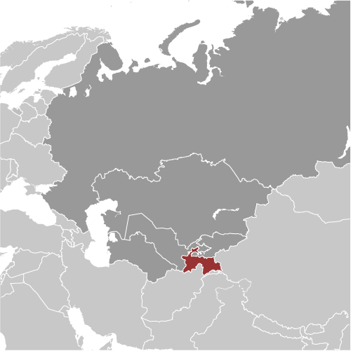

-
Introduction :: Tajikistan
-
Background:
The Tajik people came under Russian rule in the 1860s and 1870s, but Russia's hold on Central Asia weakened following the Revolution of 1917. Bands of indigenous guerrillas (called "basmachi") fiercely contested Bolshevik control of the area, which was not fully reestablished until 1925. Tajikistan was first created as an autonomous republic within Uzbekistan in 1924, but the USSR designated Tajikistan a separate republic in 1929 and transferred to it much of present-day Sughd province. Ethnic Uzbeks form a substantial minority in Tajikistan, and ethnic Tajiks an even larger minority in Uzbekistan. Tajikistan became independent in 1991 following the breakup of the Soviet Union, and experienced a civil war between political, regional, and religious factions from 1992 to 1997.
Tajikistan has endured several domestic security incidents since 2010, including armed conflict between government forces and local strongmen in the Rasht Valley and between government forces and criminal groups in Gorno-Badakhshan Autonomous Oblast. In September 2015, government security forces rebuffed attacks led by a former high-ranking official in the Ministry of Defense. President Emomali RAHMON, who came to power during the civil war, used the attacks to ban the main opposition political party in Tajikistan. In May 2016, RAHMON further strengthened his position by having himself designated "Leader of the Nation" with limitless terms and lifelong immunity through constitutional amendments ratified in a referendum. The referendum also lowered the minimum age required to run for president from 35 to 30, which would make RAHMON's son Rustam EMOMALI, the current mayor of the capital Dushanbe, eligible to run for president in 2020. The country remains the poorest in the former Soviet sphere. Tajikistan became a member of the WTO in March 2013. However, its economy continues to face major challenges, including dependence on remittances from Tajiks working in Russia, pervasive corruption, and the opiate trade emanating from neighboring Afghanistan.
-
Geography :: Tajikistan
-
Location:Central Asia, west of China, south of KyrgyzstanGeographic coordinates:39 00 N, 71 00 EMap references:AsiaArea:total: 144,100 sq kmland: 141,510 sq kmwater: 2,590 sq kmcountry comparison to the world: 97Area - comparative:slightly smaller than WisconsinLand boundaries:total: 4,130 kmborder countries (4): Afghanistan 1357 km, China 477 km, Kyrgyzstan 984 km, Uzbekistan 1312 kmCoastline:0 km (landlocked)Maritime claims:none (landlocked)Climate:mid-latitude continental, hot summers, mild winters; semiarid to polar in Pamir MountainsTerrain:mountainous region dominated by the Trans-Alay Range in the north and the Pamirs in the southeast; western Fergana Valley in north, Kofarnihon and Vakhsh Valleys in southwestElevation:mean elevation: 3,186 melevation extremes: 300 m lowest point: Syr Darya (Sirdaryo)7495 highest point: Qullai Ismoili SomoniNatural resources:hydropower, some petroleum, uranium, mercury, brown coal, lead, zinc, antimony, tungsten, silver, goldLand use:agricultural land: 34.7% (2011 est.)arable land: 6.1% (2011 est.) / permanent crops: 0.9% (2011 est.) / permanent pasture: 27.7% (2011 est.)forest: 2.9% (2011 est.)other: 62.4% (2011 est.)Irrigated land:7,420 sq km (2012)Population distribution:the country's population is concentrated at lower elevations, with perhaps as much as 90% of the people living in valleys; overall density increases from east to westNatural hazards:earthquakes; floodsEnvironment - current issues:areas of high air pollution from motor vehicles and industry; water pollution from agricultural runoff and disposal of untreated industrial waste and sewage; poor management of water resources; soil erosion; increasing levels of soil salinityEnvironment - international agreements:party to: Biodiversity, Climate Change, Climate Change-Kyoto Protocol, Desertification, Environmental Modification, Hazardous Wastes, Ozone Layer Protection, Wetlandssigned, but not ratified: none of the selected agreementsGeography - note:landlocked; highest point, Qullai Ismoili Somoni (formerly Communism Peak), was the tallest mountain in the former USSR
-
People and Society :: Tajikistan
-
Population:8,604,882 (July 2018 est.)country comparison to the world: 97Nationality:noun: Tajikistani(s)adjective: TajikistaniEthnic groups:Tajik 84.3% (includes Pamiri and Yagnobi), Uzbek 12.2%, other 3.5% (includes Kyrgyz, Russian, Turkmen, Tatar, Arab) (2010 est.)Languages:Tajik (official) 84.4%, Uzbek 11.9%, Kyrgyz .8%, Russian .5%, other 2.4% (2010 est.)
note: Russian widely used in government and business
Religions:Muslim 96.7% (Sunni ~90%, Shia ~7%), Christian 1.6%, unaffiliated 1.5%, other .2% (2010 est.)Age structure:0-14 years: 32.05% (male 1,404,403 /female 1,353,704)15-24 years: 18.35% (male 801,172 /female 777,524)25-54 years: 40.34% (male 1,721,081 /female 1,749,819)55-64 years: 5.85% (male 231,820 /female 271,946)65 years and over: 3.41% (male 121,405 /female 172,008) (2018 est.)population pyramid: The World Factbook Field Image ModalCentral Asia :: Tajikistan Print
The World Factbook Field Image ModalCentral Asia :: Tajikistan Print Image DescriptionThis is the population pyramid for Tajikistan. A population pyramid illustrates the age and sex structure of a country's population and may provide insights about political and social stability, as well as economic development. The population is distributed along the horizontal axis, with males shown on the left and females on the right. The male and female populations are broken down into 5-year age groups represented as horizontal bars along the vertical axis, with the youngest age groups at the bottom and the oldest at the top. The shape of the population pyramid gradually evolves over time based on fertility, mortality, and international migration trends.
Image DescriptionThis is the population pyramid for Tajikistan. A population pyramid illustrates the age and sex structure of a country's population and may provide insights about political and social stability, as well as economic development. The population is distributed along the horizontal axis, with males shown on the left and females on the right. The male and female populations are broken down into 5-year age groups represented as horizontal bars along the vertical axis, with the youngest age groups at the bottom and the oldest at the top. The shape of the population pyramid gradually evolves over time based on fertility, mortality, and international migration trends.
For additional information, please see the entry for Population pyramid on the Definitions and Notes page under the References tab.Dependency ratios:total dependency ratio: 62.5 (2015 est.)youth dependency ratio: 57.1 (2015 est.)elderly dependency ratio: 5.4 (2015 est.)potential support ratio: 18.5 (2015 est.)Median age:total: 24.8 yearsmale: 24.2 yearsfemale: 25.4 years (2018 est.)country comparison to the world: 160Population growth rate:1.58% (2018 est.)country comparison to the world: 65Birth rate:22.8 births/1,000 population (2018 est.)country comparison to the world: 64Death rate:5.9 deaths/1,000 population (2018 est.)country comparison to the world: 169Net migration rate:-1.1 migrant(s)/1,000 population (2017 est.)country comparison to the world: 141Population distribution:the country's population is concentrated at lower elevations, with perhaps as much as 90% of the people living in valleys; overall density increases from east to westUrbanization:urban population: 27.1% of total population (2018)rate of urbanization: 2.62% annual rate of change (2015-20 est.)Major urban areas - population:873,000 DUSHANBE (capital) (2018)Sex ratio:at birth: 1.04 male(s)/female (2017 est.)0-14 years: 1.04 male(s)/female (2017 est.)15-24 years: 1.03 male(s)/female (2017 est.)25-54 years: 0.98 male(s)/female (2017 est.)55-64 years: 0.85 male(s)/female (2017 est.)65 years and over: 0.72 male(s)/female (2017 est.)total population: 0.99 male(s)/female (2017 est.)Mother's mean age at first birth:22 years (2017 est.)note: median age at first birth among women 25-29
Maternal mortality rate:32 deaths/100,000 live births (2015 est.)country comparison to the world: 111Infant mortality rate:total: 30.8 deaths/1,000 live births (2018 est.)male: 34.8 deaths/1,000 live births (2018 est.)female: 26.5 deaths/1,000 live births (2018 est.)country comparison to the world: 59Life expectancy at birth:total population: 68.4 years (2018 est.)male: 65.2 years (2018 est.)female: 71.7 years (2018 est.)country comparison to the world: 168Total fertility rate:2.59 children born/woman (2018 est.)country comparison to the world: 73Contraceptive prevalence rate:27.9% (2012)Health expenditures:6.9% of GDP (2014)country comparison to the world: 86Physicians density:1.71 physicians/1,000 population (2014)Hospital bed density:4.8 beds/1,000 population (2013)Drinking water source:improved: urban: 93.1% of populationrural: 66.7% of populationtotal: 73.8% of populationunimproved: urban: 6.9% of populationrural: 33.3% of populationtotal: 26.2% of population (2015 est.)Sanitation facility access:improved: urban: 93.8% of population (2015 est.)rural: 95.5% of population (2015 est.)total: 95% of population (2015 est.)unimproved: urban: 6.2% of population (2015 est.)rural: 4.5% of population (2015 est.)total: 5% of population (2015 est.)HIV/AIDS - adult prevalence rate:0.3% (2017 est.)country comparison to the world: 88HIV/AIDS - people living with HIV/AIDS:15,000 (2017 est.)country comparison to the world: 88HIV/AIDS - deaths:<1000 (2017 est.)Major infectious diseases:degree of risk: high (2016)food or waterborne diseases: bacterial diarrhea, hepatitis A, and typhoid fever (2016)vectorborne diseases: malaria (2016)Obesity - adult prevalence rate:14.2% (2016)country comparison to the world: 128Children under the age of 5 years underweight:13.3% (2012)country comparison to the world: 50Education expenditures:5.2% of GDP (2015)country comparison to the world: 65Literacy:definition: age 15 and over can read and write (2015 est.)total population: 99.8% (2015 est.)male: 99.8% (2015 est.)female: 99.7% (2015 est.)School life expectancy (primary to tertiary education):total: 11 years (2013)male: 12 years (2013)female: 11 years (2013)Unemployment, youth ages 15-24:total: 16.7% (2009 est.)male: 19.2% (2009 est.)female: 13.7% (2009 est.)country comparison to the world: 81 -
Government :: Tajikistan
-
Country name:conventional long form: Republic of Tajikistanconventional short form: Tajikistanlocal long form: Jumhurii Tojikistonlocal short form: Tojikistonformer: Tajik Soviet Socialist Republicetymology: the Persian suffix "-stan" means "place of" or "country," so the word Tajikistan literally means "Land of the Tajik [people]"Government type:presidential republicCapital:name: Dushanbegeographic coordinates: 38 33 N, 68 46 Etime difference: UTC+5 (10 hours ahead of Washington, DC, during Standard Time)Administrative divisions:2 provinces (viloyatho, singular - viloyat), 1 autonomous province* (viloyati mukhtor), 1 capital region** (viloyati poytakht), and 1 area referred to as Districts Under Republic Administration***; Dushanbe**, Khatlon (Qurghonteppa), Kuhistoni Badakhshon [Gorno-Badakhshan]* (Khorugh), Nohiyahoi Tobei Jumhuri***, Sughd (Khujand)
note: the administrative center name follows in parentheses
Independence:9 September 1991 (from the Soviet Union)National holiday:Independence Day (or National Day), 9 September (1991)Constitution:history: several previous; latest adopted 6 November 1994 (2017)amendments: proposed by the president of the republic or by at least one-third of the total membership of both houses of the Supreme Assembly; adoption of any amendment requires a referendum, which includes approval by the president or approval by at least two-thirds of the Assembly of Representatives membership; passage in a referendum requires participation of an absolute majority of eligible voters and an absolute majority of votes; note – constitutional articles including Tajikistan’s form of government, its territory, and its democratic nature cannot be amended; amended several times, last in 2016 (2017)Legal system:civil law systemInternational law organization participation:has not submitted an ICJ jurisdiction declaration; accepts ICCt jurisdictionCitizenship:citizenship by birth: nocitizenship by descent only: at least one parent must be a citizen of Tajikistandual citizenship recognized: noresidency requirement for naturalization: 5 years or 3 years of continuous residence prior to applicationSuffrage:18 years of age; universalJudicial branch:highest courts: Supreme Court (consists of the chairman, deputy chairmen, and 34 judges organized into civil, criminal, and military chambers); Constitutional Court (consists of the court chairman, vice president, and 5 judges); High Economic Court (consists of 16 judicial positions)judge selection and term of office: Supreme Court, Constitutional Court, and High Economic Court judges nominated by the president and approved by the National Assembly; judges of all 3 courts appointed for 10-year renewable terms with no term limits, but the last appointment must occur before the age of 65subordinate courts: regional and district courts; Dushanbe City Court; viloyat (province level) courts; Court of Gorno-Badakhshan Autonomous RegionExecutive branch:chief of state: President Emomali RAHMON (since 6 November 1994; head of state and Supreme Assembly chairman since 19 November 1992)head of government: Prime Minister Qohir RASULZODA (since 23 November 2013)cabinet: Council of Ministers appointed by the president, approved by the Supreme Assemblyelections/appointments: president directly elected by simple majority popular vote for a 7-year term for a maximum of two terms; however, as the "Leader of the Nation" President RAHMON can run an unlimited number of times; election last held on 6 November 2013 (next to be held in November 2020); prime minister appointed by the presidentelection results: Emomali RAHMON reelected president; percent of vote - Emomali RAHMON (PDPT) 83.9%, Ismoil TALBAKOV (CPT) 5%, other 11.1%Legislative branch:description: bicameral Supreme Assembly or Majlisi Oli consists of:
National Assembly or Majlisi Milli (34 seats; 25 members indirectly elected by local representative assemblies or majlisi, 8 appointed by the president, and 1 reserved for each living former president; members serve 5-year terms)
Assembly of Representatives or Majlisi Namoyandagon (63 seats; 41 members directly elected in single-seat constituencies by 2-round absolute majority vote and 22 directly elected in a single nationwide constituency by proportional representation vote; members serve 5-year terms)elections:
National Assembly - last held on 1 March 2015 (next to be held in 2020)
Assembly of Representatives - last held on 1 March 2015 (next to be held in 2020)election results:
National Assembly - percent of vote by party - NA; seats by party - NA; composition - men 32, women 2, percent of women 5.9%
Assembly of Representatives - percent of vote by party - PDPT 65.4%, APT 11.7%, PERT 7.5%, SPT 5.5%, CPT 2.2%, DPT 1.7%, other 6%; seats by party - PDPT 51, APT 5, PERT 3, CPT 2, SPT 1, DPT 1; composition - men 51, women 12, percent of women19%; note - total Supreme Assembly percent of women 14.4%Political parties and leaders:Agrarian Party of Tajikistan or APT [Rustam LATIFZODA]
Communist Party of Tajikistan or CPT [Miroj ABDULLOYEV]
Democratic Party of Tajikistan or DPT [Saidjafar USMONZODA]
Party of Economic Reform of Tajikistan or PERT [Olimjon BOBOEV]
People's Democratic Party of Tajikistan or PDPT [Emomali RAHMON]
Social Democratic Party of Tajikistan or SDPT [Rahmatullo ZOIROV]
Socialist Party of Tajikistan or SPT [Abduhalim GHAFFOROV]International organization participation:ADB, CICA, CIS, CSTO, EAEC, EAPC, EBRD, ECO, EITI (candidate country), FAO, G-77, GCTU, IAEA, IBRD, ICAO, ICC (NGOs), ICCt, ICRM, IDA, IDB, IFAD, IFC, IFRCS, ILO, IMF, Interpol, IOC, IOM, IPU, ISO (correspondent), ITSO, ITU, MIGA, NAM (observer), OIC, OPCW, OSCE, PFP, SCO, UN, UNCTAD, UNESCO, UNIDO, UNWTO, UPU, WCO, WFTU (NGOs), WHO, WIPO, WMO, WTODiplomatic representation in the US:chief of mission: Ambassador Farhod SALIM (since 21 May 2014)chancery: 1005 New Hampshire Avenue NW, Washington, DC 20037telephone: [1] (202) 223-6090FAX: [1] (202) 223-6091Diplomatic representation from the US:chief of mission: Ambassador (vacant); Charge d'Affaires Kevin COVERT (since 31 August 2017)embassy: 109-A Ismoili Somoni Avenue, Dushanbe 734019mailing address: 7090 Dushanbe Place, Dulles, VA 20189telephone: [992] (37) 229-20-00FAX: [992] (37) 229-20-50Flag description:three horizontal stripes of red (top), a wider stripe of white, and green; a gold crown surmounted by seven gold, five-pointed stars is located in the center of the white stripe; red represents the sun, victory, and the unity of the nation, white stands for purity, cotton, and mountain snows, while green is the color of Islam and the bounty of nature; the crown symbolizes the Tajik people; the seven stars signify the Tajik magic number "seven" - a symbol of perfection and the embodiment of happinessNational symbol(s):crown surmounted by an arc of seven, five-pointed stars; snow leopard; national colors: red, white, greenNational anthem:name: "Surudi milli" (National Anthem)lyrics/music: Gulnazar KELDI/Sulaimon YUDAKOVnote: adopted 1991; after the fall of the Soviet Union, Tajikistan kept the music of the anthem from its time as a Soviet republic but adopted new lyrics
-
Economy :: Tajikistan
-
Economy - overview:
Tajikistan is a poor, mountainous country with an economy dominated by minerals extraction, metals processing, agriculture, and reliance on remittances from citizens working abroad. Mineral resources include silver, gold, uranium, antimony, tungsten, and coal. Industry consists mainly of small obsolete factories in food processing and light industry, substantial hydropower facilities, and a large aluminum plant - currently operating well below its capacity. The 1992-97 civil war severely damaged an already weak economic infrastructure and caused a sharp decline in industrial and agricultural production. Today, Tajikistan is the poorest among the former Soviet republics. Because less than 7% of the land area is arable and cotton is the predominant crop, Tajikistan imports approximately 70% of its food.
Since the end of the civil war, the country has pursued half-hearted reforms and privatizations in the economic sphere, but its poor business climate remains a hindrance to attracting foreign investment. Some experts estimate the value of narcotics transiting Tajikistan is equivalent to 30%-50% of GDP.
Because of a lack of employment opportunities in Tajikistan, more than one million Tajik citizens work abroad - roughly 90% in Russia - supporting families back home through remittances that in 2017 were equivalent to nearly 35% of GDP. Tajikistan’s large remittances from migrant workers in Russia exposes it to monetary shocks. Tajikistan often delays devaluation of its currency for fear of inflationary pressures on food and other consumables. Recent slowdowns in the Russian and Chinese economies, low commodity prices, and currency fluctuations have hampered economic growth. The dollar value of remittances from Russia to Tajikistan dropped by almost 65% in 2015, and the government spent almost $500 million in 2016 to bail out the country’s still troubled banking sector.
Tajikistan’s growing public debt – currently about 50% of GDP – could result in financial difficulties. Remittances from Russia increased in 2017, however, bolstering the economy somewhat. China owns about 50% of Tajikistan’s outstanding debt. Tajikistan has borrowed heavily to finance investment in the country’s vast hydropower potential. In 2016, Tajikistan contracted with the Italian firm Salini Impregilo to build the Roghun dam over a 13-year period for $3.9 billion. A 2017 Eurobond has largely funded Roghun’s first phase, after which sales from Roghun’s output are expected to fund the rest of its construction. The government has not ruled out issuing another Eurobond to generate auxiliary funding for its second phase.
GDP (purchasing power parity):$28.43 billion (2017 est.)$26.55 billion (2016 est.)$24.83 billion (2015 est.)note: data are in 2017 dollars
country comparison to the world: 135GDP (official exchange rate):$7.144 billion (2017 est.) (2017 est.)GDP - real growth rate:7.1% (2017 est.)6.9% (2016 est.)6% (2015 est.)country comparison to the world: 19GDP - per capita (PPP):$3,200 (2017 est.)$3,000 (2016 est.)$2,900 (2015 est.)note: data are in 2017 dollars
country comparison to the world: 192Gross national saving:24.4% of GDP (2017 est.)15.4% of GDP (2016 est.)11.8% of GDP (2015 est.)country comparison to the world: 66GDP - composition, by end use:household consumption: 98.4% (2017 est.)government consumption: 13.3% (2017 est.)investment in fixed capital: 11.7% (2017 est.)investment in inventories: 2.5% (2017 est.)exports of goods and services: 10.7% (2017 est.)imports of goods and services: -36.6% (2017 est.)GDP - composition, by sector of origin:agriculture: 28.6% (2017 est.)industry: 25.5% (2017 est.)services: 45.9% (2017 est.)Agriculture - products:cotton, grain, fruits, grapes, vegetables; cattle, sheep, goatsIndustries:aluminum, cement, coal, gold, silver, antimony, textile, vegetable oilIndustrial production growth rate:1% (2017 est.)country comparison to the world: 159Labor force:2.295 million (2016 est.)country comparison to the world: 118Labor force - by occupation:agriculture: 43%industry: 10.6%services: 46.4% (2016 est.)Unemployment rate:2.4% (2016 est.)2.5% (2015 est.)note: official rate; actual unemployment is much higher
country comparison to the world: 25Population below poverty line:31.5% (2016 est.)Distribution of family income - Gini index:32.6 (2006)34.7 (1998)country comparison to the world: 116Budget:revenues: 2.269 billion (2017 est.)expenditures: 2.374 billion (2017 est.)Taxes and other revenues:31.8% (of GDP) (2017 est.)country comparison to the world: 71Budget surplus (+) or deficit (-):-1.5% (of GDP) (2017 est.)country comparison to the world: 90Public debt:50.4% of GDP (2017 est.)42% of GDP (2016 est.)country comparison to the world: 101Fiscal year:calendar yearInflation rate (consumer prices):7.3% (2017 est.)5.9% (2016 est.)country comparison to the world: 193Central bank discount rate:16% (20 March 2017)6.5% (31 December 2012)country comparison to the world: 12Commercial bank prime lending rate:30% (31 December 2017 est.)24.24% (31 December 2016 est.)country comparison to the world: 5Stock of narrow money:$1.389 billion (31 December 2017 est.)$1.108 billion (31 December 2016 est.)country comparison to the world: 145Stock of broad money:$1.389 billion (31 December 2017 est.)$1.108 billion (31 December 2016 est.)country comparison to the world: 153Stock of domestic credit:$1.06 billion (31 December 2017 est.)$1.711 billion (31 December 2016 est.)country comparison to the world: 168Current account balance:-$35 million (2017 est.)-$362 million (2016 est.)country comparison to the world: 78Exports:$873.1 million (2017 est.)$691.1 million (2016 est.)country comparison to the world: 166Exports - partners:Turkey 27.5%, China 17.7%, Russia 13.4%, Switzerland 12.5%, Algeria 8.2%, Iran 7.1% (2017)Exports - commodities:aluminum, electricity, cotton, fruits, vegetable oil, textilesImports:$2.39 billion (2017 est.)$2.554 billion (2016 est.)country comparison to the world: 160Imports - commodities:petroleum products, aluminum oxide, machinery and equipment, foodstuffsImports - partners:Russia 38%, Kazakhstan 19%, China 8.7%, Iran 4.4% (2017)Reserves of foreign exchange and gold:$1.292 billion (31 December 2017 est.)$652.8 million (31 December 2016 est.)country comparison to the world: 127Debt - external:$5.75 billion (31 December 2017 est.)$5.495 billion (31 December 2016 est.)country comparison to the world: 130Stock of direct foreign investment - at home:$2.272 billion (31 December 2013 est.)country comparison to the world: 118Stock of direct foreign investment - abroad:$16.3 billion (31 December 2009)country comparison to the world: 60Exchange rates:Tajikistani somoni (TJS) per US dollar -8.764 (2017 est.)7.8358 (2016 est.)7.8358 (2015 est.)6.1631 (2014 est.)4.9348 (2013 est.) -
Energy :: Tajikistan
-
Electricity access:electrification - total population: 100% (2016)Electricity - production:17.03 billion kWh (2016 est.)country comparison to the world: 85Electricity - consumption:12.96 billion kWh (2016 est.)country comparison to the world: 85Electricity - exports:1.4 billion kWh NA (2015 est.)country comparison to the world: 52Electricity - imports:103 million kWh (2016 est.)country comparison to the world: 98Electricity - installed generating capacity:5.508 million kW (2016 est.)country comparison to the world: 78Electricity - from fossil fuels:6% of total installed capacity (2016 est.)country comparison to the world: 201Electricity - from nuclear fuels:0% of total installed capacity (2017 est.)country comparison to the world: 191Electricity - from hydroelectric plants:94% of total installed capacity (2017 est.)country comparison to the world: 6Electricity - from other renewable sources:0% of total installed capacity (2017 est.)country comparison to the world: 208Crude oil - production:180 bbl/day (2017 est.)country comparison to the world: 97Crude oil - exports:0 bbl/day (2015 est.)country comparison to the world: 204Crude oil - imports:0 bbl/day (2015 est.)country comparison to the world: 201Crude oil - proved reserves:12 million bbl (1 January 2018 est.)country comparison to the world: 89Refined petroleum products - production:172 bbl/day (2015 est.)country comparison to the world: 108Refined petroleum products - consumption:24,000 bbl/day (2016 est.)country comparison to the world: 130Refined petroleum products - exports:0 bbl/day (2015 est.)country comparison to the world: 206Refined petroleum products - imports:22,460 bbl/day (2015 est.)country comparison to the world: 114Natural gas - production:19.82 million cu m (2017 est.)country comparison to the world: 89Natural gas - consumption:19.82 million cu m (2017 est.)country comparison to the world: 114Natural gas - exports:0 cu m (2017 est.)country comparison to the world: 197Natural gas - imports:0 cu m (2017 est.)country comparison to the world: 197Natural gas - proved reserves:5.663 billion cu m (1 January 2018 est.)country comparison to the world: 91Carbon dioxide emissions from consumption of energy:6.329 million Mt (2017 est.)country comparison to the world: 126
-
Communications :: Tajikistan
-
Telephones - fixed lines:total subscriptions: 468,000 (July 2016 est.)subscriptions per 100 inhabitants: 6 (July 2016 est.)country comparison to the world: 99Telephones - mobile cellular:total subscriptions: 9.4 million (July 2016 est.)subscriptions per 100 inhabitants: 111 (July 2016 est.)country comparison to the world: 87Telephone system:general assessment: foreign investment in the telephone system has resulted in major improvements; conversion of the existing fixed network from analogue to digital was completed in 2012 (2016)domestic: fixed line availability has not changed significantly since 1998, while mobile cellular subscribership, aided by competition among multiple operators, has expanded rapidly; coverage now extends to all major cities and towns (2016)international: country code - 992; linked by cable and microwave radio relay to other CIS republics and by leased connections to the Moscow international gateway switch; Dushanbe linked by Intelsat to international gateway switch in Ankara (Turkey); satellite earth stations - 3 (2 Intelsat and 1 Orbita); established a single gateway for Internet traffic in December 2015, which is expected to limit the connectivity of nonstate-owned telecom, Internet, and mobile companies (2016)Broadcast media:state-run TV broadcasters transmit nationally on 9 TV and 10 radio stations, and regionally on 4 stations; 31 independent TV and 20 radio stations broadcast locally and regionally; many households are able to receive Russian and other foreign stations via cable and satellite (2016)Internet country code:.tjInternet users:total: 1,705,345 (July 2016 est.)percent of population: 20.5% (July 2016 est.)country comparison to the world: 119Broadband - fixed subscriptions:total: 6,000 (2017 est.)subscriptions per 100 inhabitants: less than 1 (2017 est.)country comparison to the world: 174
-
Transportation :: Tajikistan
-
National air transport system:number of registered air carriers: 2 (2015)inventory of registered aircraft operated by air carriers: 10 (2015)annual passenger traffic on registered air carriers: 802,470 (2015)annual freight traffic on registered air carriers: 105,376 mt-km (2015)Civil aircraft registration country code prefix:EY (2016)Airports:24 (2013)country comparison to the world: 132Airports - with paved runways:total: 17 (2013)over 3,047 m: 2 (2013)2,438 to 3,047 m: 4 (2013)1,524 to 2,437 m: 5 (2013)914 to 1,523 m: 3 (2013)under 914 m: 3 (2013)Airports - with unpaved runways:total: 7 (2013)1,524 to 2,437 m: 1 (2013)914 to 1,523 m: 1 (2013)under 914 m: 5 (2013)Pipelines:549 km gas, 38 km oil (2013)Railways:total: 680 km (2014)broad gauge: 680 km 1.520-m gauge (2014)country comparison to the world: 102Roadways:total: 27,767 km (2000)country comparison to the world: 98Waterways:200 km (along Vakhsh River) (2011)country comparison to the world: 98
-
Military and Security :: Tajikistan
-
Military expenditures:1.19% of GDP (2017)1.25% of GDP (2016)1.22% of GDP (2015)1.13% of GDP (2014)1% of GDP (2012)country comparison to the world: 99Military branches:Ground Forces, Air and Air Defense Forces, Mobile Forces (2013)Military service age and obligation:18-27 years of age for compulsory or voluntary military service; 2-year conscript service obligation; males required to undergo compulsory military training between ages 16 and 55; males can enroll in military schools from at least age 15 (2012)
-
Transnational Issues :: Tajikistan
-
Disputes - international:in 2006, China and Tajikistan pledged to commence demarcation of the revised boundary agreed to in the delimitation of 2002talks continue with Uzbekistan to delimit border and remove minefieldsdisputes in Isfara Valley delay delimitation with KyrgyzstanRefugees and internally displaced persons:stateless persons: 10,500 (2017)Illicit drugs:Tajikistan sits on one of the world's highest volume illicit drug trafficking routes, between Afghan opiate production to the south and the illicit drug markets of Russia and Eastern Europe to the north; limited illicit cultivation of opium poppy for domestic consumption; significant consumer of opiates
Central Asia ::
Tajikistan